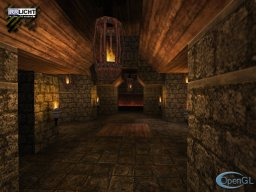

The Irrlicht
Engine Documentation © 2003-2009 by Nikolaus Gebhardt. Generated
on Sun Jan 10 09:24:07 2010 by Doxygen
(1.5.6)
| Home | Namespaces | Hierarchy | Alphabetical List | Class list | Files | Namespace Members | Class members | File members | Tutorials |

This Tutorial shows how to load a Quake 3 map into the engine, create a SceneNode for optimizing the speed of rendering and how to create a user controlled camera.
Lets start like the HelloWorld example: We include the irrlicht header files and an additional file to be able to ask the user for a driver type using the console.
#include <irrlicht.h> #include <iostream>
define which Quake3 Level should be loaded
#define IRRLICHT_QUAKE3_ARENA //#define ORIGINAL_QUAKE3_ARENA //#define CUSTOM_QUAKE3_ARENA //#define SHOW_SHADER_NAME #ifdef ORIGINAL_QUAKE3_ARENA #define QUAKE3_STORAGE_FORMAT addFolderFileArchive #define QUAKE3_STORAGE_1 "/baseq3/" #ifdef CUSTOM_QUAKE3_ARENA #define QUAKE3_STORAGE_2 "/cf/" #define QUAKE3_MAP_NAME "maps/cf.bsp" #else #define QUAKE3_MAP_NAME "maps/q3dm8.bsp" #endif #endif #ifdef IRRLICHT_QUAKE3_ARENA #define QUAKE3_STORAGE_FORMAT addZipFileArchive #define QUAKE3_STORAGE_1 "../../media/map-20kdm2.pk3" #define QUAKE3_MAP_NAME "maps/20kdm2.bsp" #endif
As already written in the HelloWorld example, in the Irrlicht Engine, everything can be found in the namespace 'irr'. To get rid of the irr:: in front of the name of every class, we tell the compiler that we use that namespace from now on, and we will not have to write that 'irr::'. There are 5 other sub namespaces 'core', 'scene', 'video', 'io' and 'gui'. Unlike in the HelloWorld example, we do not a 'using namespace' for these 5 other namespaces because in this way you will see what can be found in which namespace. But if you like, you can also include the namespaces like in the previous example. Code just like you want to.
using namespace irr; using namespace scene;
Again, to be able to use the Irrlicht.DLL file, we need to link with the Irrlicht.lib. We could set this option in the project settings, but to make it easy, we use a pragma comment lib:
#ifdef _MSC_VER #pragma comment(lib, "Irrlicht.lib") #endif class CScreenShotFactory : public IEventReceiver { public: CScreenShotFactory( IrrlichtDevice *device, const c8 * templateName, ISceneNode* node ) : Device(device), Number(0), FilenameTemplate(templateName), Node(node) { FilenameTemplate.replace ( '/', '_' ); FilenameTemplate.replace ( '\\', '_' ); } bool OnEvent(const SEvent& event) { // check if user presses the key F9 if ((event.EventType == EET_KEY_INPUT_EVENT) && event.KeyInput.PressedDown) { if (event.KeyInput.Key == KEY_F9) { video::IImage* image = Device->getVideoDriver()->createScreenShot(); if (image) { c8 buf[256]; snprintf(buf, 256, "%s_shot%04d.jpg", FilenameTemplate.c_str(), ++Number); Device->getVideoDriver()->writeImageToFile(image, buf, 85 ); image->drop(); } } else if (event.KeyInput.Key == KEY_F8) { Node->setDebugDataVisible(scene::EDS_BBOX_ALL); } } return false; } private: IrrlichtDevice *Device; u32 Number; core::stringc FilenameTemplate; ISceneNode* Node; };
Ok, lets start.
int IRRCALLCONV main(int argc, char* argv[]) {
Like in the HelloWorld example, we create an IrrlichtDevice with createDevice(). The difference now is that we ask the user to select which hardware accelerated driver to use. The Software device would be too slow to draw a huge Quake 3 map, but just for the fun of it, we make this decision possible too.
// ask user for driver video::E_DRIVER_TYPE driverType; printf("Please select the driver you want for this example:\n"\ " (a) Direct3D 9.0c\n (b) Direct3D 8.1\n (c) OpenGL 1.5\n"\ " (d) Software Renderer\n (e) Burning's Software Renderer\n"\ " (f) NullDevice\n (otherKey) exit\n\n"); char i; std::cin >> i; switch(i) { case 'a': driverType = video::EDT_DIRECT3D9;break; case 'b': driverType = video::EDT_DIRECT3D8;break; case 'c': driverType = video::EDT_OPENGL; break; case 'd': driverType = video::EDT_SOFTWARE; break; case 'e': driverType = video::EDT_BURNINGSVIDEO;break; case 'f': driverType = video::EDT_NULL; break; default: return 1; } // create device and exit if creation failed const core::dimension2du videoDim ( 800,600 ); IrrlichtDevice *device = createDevice(driverType, videoDim, 32, false ); if (device == 0) return 1; // could not create selected driver. const char* mapname=0; if (argc>2) mapname = argv[2]; else mapname = QUAKE3_MAP_NAME;
Get a pointer to the video driver and the SceneManager so that we do not always have to write device->getVideoDriver() and device->getSceneManager().
video::IVideoDriver* driver = device->getVideoDriver();
scene::ISceneManager* smgr = device->getSceneManager();
gui::IGUIEnvironment* gui = device->getGUIEnvironment();
device->getFileSystem()->addFolderFileArchive("../../media/");
To display the Quake 3 map, we first need to load it. Quake 3 maps are packed into .pk3 files, which are nothing other than .zip files. So we add the .pk3 file to our FileSystem. After it was added, we are able to read from the files in that archive as they would directly be stored on disk.
if (argc>2) device->getFileSystem()->QUAKE3_STORAGE_FORMAT (argv[1]); else device->getFileSystem()->QUAKE3_STORAGE_FORMAT ( QUAKE3_STORAGE_1 ); #ifdef QUAKE3_STORAGE_2 device->getFileSystem()->QUAKE3_STORAGE_FORMAT ( QUAKE3_STORAGE_2 ); #endif // Quake3 Shader controls Z-Writing smgr->getParameters()->setAttribute(scene::ALLOW_ZWRITE_ON_TRANSPARENT, true);
Now we can load the mesh by calling getMesh(). We get a pointer returned to a IAnimatedMesh. As you know, Quake 3 maps are not really animated, they are only a huge chunk of static geometry with some materials attached. Hence the IAnimated mesh consists of only one frame, so we get the "first frame" of the "animation", which is our quake level and create an OctTree scene node with it, using addOctTreeSceneNode(). The OctTree optimizes the scene a little bit, trying to draw only geometry which is currently visible. An alternative to the OctTree would be a AnimatedMeshSceneNode, which would draw always the complete geometry of the mesh, without optimization. Try it out: Write addAnimatedMeshSceneNode instead of addOctTreeSceneNode and compare the primitives drawed by the video driver. (There is a getPrimitiveCountDrawed() method in the IVideoDriver class). Note that this optimization with the Octree is only useful when drawing huge meshes consisting of lots of geometry.
scene::IQ3LevelMesh* mesh =
(scene::IQ3LevelMesh*) smgr->getMesh(mapname);
add the geometry mesh to the Scene ( polygon & patches ) The Geometry mesh is optimised for faster drawing
scene::ISceneNode* node = 0;
if ( mesh )
{
scene::IMesh *geometry = mesh->getMesh(quake3::E_Q3_MESH_GEOMETRY);
// node = smgr->addMeshSceneNode ( geometry );
node = smgr->addOctTreeSceneNode(geometry, 0, -1, 1024);
}
// create an event receiver for making screenshots
CScreenShotFactory screenshotFactory ( device, mapname, node );
device->setEventReceiver ( &screenshotFactory );
now construct SceneNodes for each Shader The Objects are stored in the quake mesh scene::E_Q3_MESH_ITEMS and the Shader ID is stored in the MaterialParameters mostly dark looking skulls and moving lava.. or green flashing tubes?
if ( mesh ) { // the additional mesh can be quite huge and is unoptimized scene::IMesh * additional_mesh = mesh->getMesh ( quake3::E_Q3_MESH_ITEMS ); #ifdef SHOW_SHADER_NAME gui::IGUIFont *font = device->getGUIEnvironment()->getFont("../../media/fontlucida.png"); u32 count = 0; #endif for ( u32 i = 0; i!= additional_mesh->getMeshBufferCount (); ++i ) { IMeshBuffer *meshBuffer = additional_mesh->getMeshBuffer ( i ); const video::SMaterial &material = meshBuffer->getMaterial(); s32 shaderIndex = (s32) material.MaterialTypeParam2; // the meshbuffer can be rendered without additional support, or it has no shader const quake3::IShader *shader = mesh->getShader ( shaderIndex ); if ( 0 == shader ) { continue; } // we can dump the shader to the console in its // original but already parsed layout in a pretty // printers way.. commented out, because the console // would be full... // quake3::dumpShader ( Shader ); #ifndef SHOW_SHADER_NAME smgr->addQuake3SceneNode ( meshBuffer, shader ); #else count += 1; node = smgr->addQuake3SceneNode ( meshBuffer, shader ); core::stringw name( node->getName() ); node = smgr->addBillboardTextSceneNode( font, name.c_str(), node, core::dimension2d<f32>(80.0f, 8.0f), core::vector3df(0, 10, 0) ); #endif } }
Now we only need a Camera to look at the Quake 3 map. And we want to create a user controlled camera. There are some different cameras available in the Irrlicht engine. For example the Maya Camera which can be controlled compareable to the camera in Maya: Rotate with left mouse button pressed, Zoom with both buttons pressed, translate with right mouse button pressed. This could be created with addCameraSceneNodeMaya(). But for this example, we want to create a camera which behaves like the ones in first person shooter games (FPS).
scene::ICameraSceneNode* camera = smgr->addCameraSceneNodeFPS();
so we need a good starting Position in the level. we can ask the Quake3 Loader for all entities with class_name "info_player_deathmatch" we choose a random launch
if ( mesh ) { quake3::tQ3EntityList &entityList = mesh->getEntityList (); quake3::IEntity search; search.name = "info_player_deathmatch"; s32 index = entityList.binary_search ( search ); if ( index >= 0 ) { const quake3::SVarGroup *group; s32 notEndList; do { group = entityList[ index ].getGroup(1); u32 parsepos = 0; core::vector3df pos = quake3::getAsVector3df ( group->get ( "origin" ), parsepos ); parsepos = 0; f32 angle = quake3::getAsFloat ( group->get ( "angle"), parsepos ); core::vector3df target ( 0.f, 0.f, 1.f ); target.rotateXZBy ( angle, core::vector3df () ); camera->setPosition ( pos ); camera->setTarget ( pos + target ); index += 1;
notEndList = ( index < (s32) entityList.size () && entityList[index].name == search.name && (device->getTimer()->getRealTime() >> 3 ) & 1 );
notEndList = index == 2;
} while ( notEndList );
}
}
The mouse cursor needs not to be visible, so we make it invisible.
device->getCursorControl()->setVisible(false); // load the engine logo gui->addImage(driver->getTexture("irrlichtlogo2.png"), core::position2d<s32>(10, 10)); // show the driver logo core::position2di pos ( videoDim.Width - 128, videoDim.Height - 64 ); switch ( driverType ) { case video::EDT_BURNINGSVIDEO: gui->addImage(driver->getTexture("burninglogo.png"),pos); break; case video::EDT_OPENGL: gui->addImage(driver->getTexture("opengllogo.png"),pos); break; case video::EDT_DIRECT3D8: case video::EDT_DIRECT3D9: gui->addImage(driver->getTexture("directxlogo.png"),pos); break; }
We have done everything, so lets draw it. We also write the current frames per second and the drawn primitives to the caption of the window. The 'if (device->isWindowActive())' line is optional, but prevents the engine render to set the position of the mouse cursor after task switching when other program are active.
int lastFPS = -1; while(device->run()) if (device->isWindowActive()) { driver->beginScene(true, true, video::SColor(255,20,20,40)); smgr->drawAll(); gui->drawAll(); driver->endScene(); int fps = driver->getFPS(); //if (lastFPS != fps) { io::IAttributes * attr = smgr->getParameters(); s32 calls = attr->getAttributeAsInt ( "calls" ); s32 culled = attr->getAttributeAsInt ( "culled" ); core::stringw str = L"Q3 ["; str += driver->getName(); str += "] FPS:"; str += fps; str += " Cull:"; str += calls; str += "/"; str += culled; str += " Draw: "; str += attr->getAttributeAsInt ( "drawn_solid" ); str += "/"; str += attr->getAttributeAsInt ( "drawn_transparent" ); str += "/"; str += attr->getAttributeAsInt ( "drawn_transparent_effect" ); device->setWindowCaption(str.c_str()); lastFPS = fps; } }
In the end, delete the Irrlicht device.
device->drop();
return 0;
}
| |
The Irrlicht
Engine Documentation © 2003-2009 by Nikolaus Gebhardt. Generated
on Sun Jan 10 09:24:07 2010 by Doxygen
(1.5.6) |